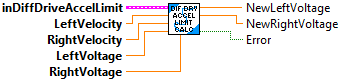

Returns the next voltage pair subject to acceleraiton constraints.
Inputs:
- DiffDriveAccelLimit -- Data cluster
- leftVelocity -- The left wheel velocity in meters per second.
- rightVelocity -- The right wheel velocity in meters per second.
- leftVoltage -- The unconstrained left motor voltage.
- rightVoltage -- The unconstrained right motor voltage.
Outputs:
- NewLeftVoltage -- The constraint drive left voltage output
- NewRightVoltage -- The constraint drive right voltage output
- Error -- If TRUE, an error occured.
Constructs a DifferentialDriveAccelerationLimiter data cluster.
Inputs:
- system -- The differential drive dynamics.
- trackwidth -- The trackwidth.
- minLinearAccel -- The minimum (most negative) linear acceleration in meters per second squared.
- maxLinearAccel -- The maximum (most positive) linear acceleration in meters per second squared.
Outputs:
- DiffDriveAccelLimit -- Created data cluster
- Error -- True if an error occured. (Min Accel limit is > than Max Accel Limit )